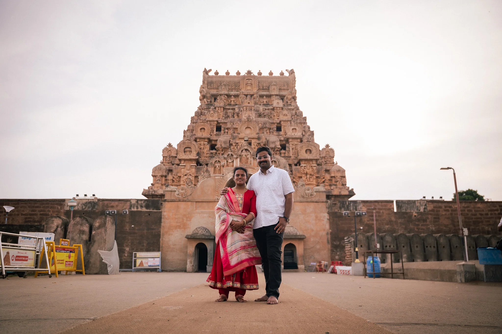
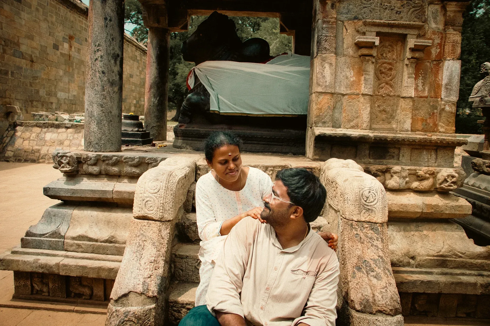
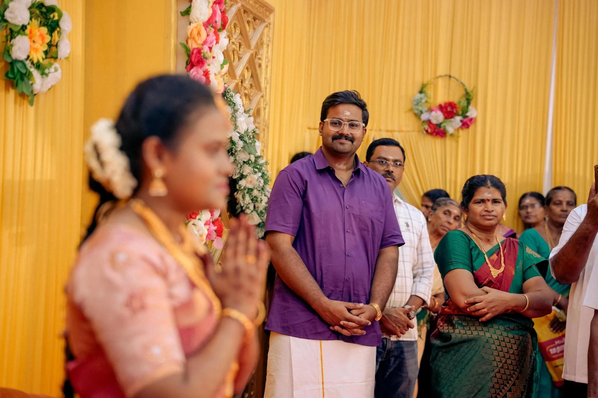
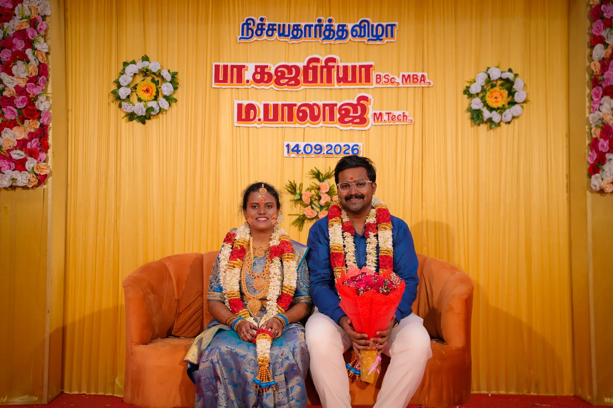
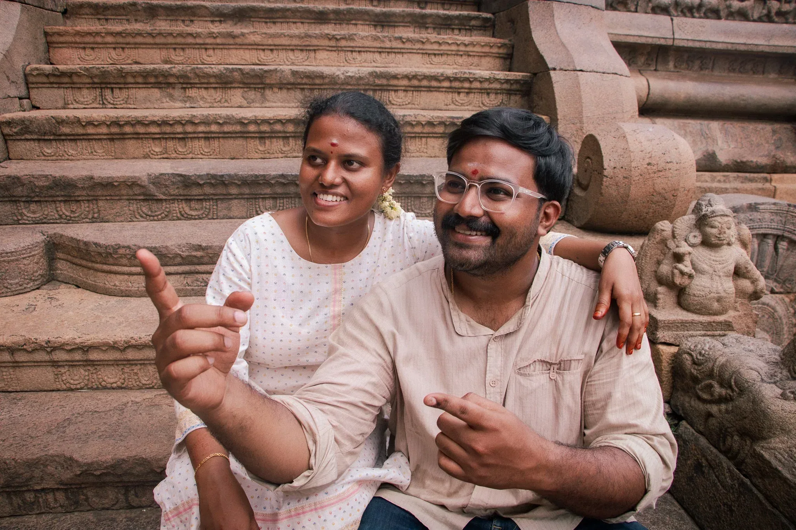
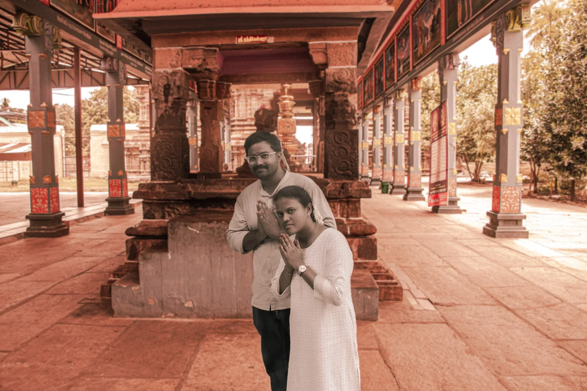

BALAJI&GAJAPRIYA

They say, two parallel paths never intersect.
Yet, somehow, ours did.
Our story goes like...

THE BRIDE
Gajapriya P
THE BRIDE
Gajapriya The Art of Finding Her Way
On the 2nd of May, 2001, in a little village called Sathanur, Perambalur, a rather interesting story began. It took Gajapriya from the familiar lanes of Perambalur to Bishop Heber College in Tiruchirappalli, where she studied Mathematics. Chennai came next, with an MBA in Logistics and Supply Chain Management from Vels University. And then, quite naturally, the story travelled all the way to Dubai, where she now works as a Customer Service Representative at Al-Futtaim Logistics. Quite a journey, one might say, with every destination having a purpose.

THE GROOM
Balaji M
THE GROOM
Balaji The Unplanned Storyteller
Born on the 24th of August, 1996, in Thanjavur, Balaji spent his childhood in Surat before eventually returning to Chennai. What began as an ordinary academic journey took a rather unusual turn towards cinema and storytelling. An Integrated M.Tech in Film and Electronic Media Studies at Madurai Kamaraj University later, he found himself working on several Tamil films as an AD. He eventually traded film sets for classrooms, becoming an Assistant Professor at Amrita, Mysuru. Whether this is the final chapter, however, remains highly debatable. The next scene is yet to be announced.

Miles apart, they got to know each other one call and one conversation at a time, until distance was no longer between them…

They got engaged
on 14th September 2026

THE PROMISE
And now they are ready to tie the knot.


WHERE WE CELEBRATE
Cauvery Mahal
Trichy Main Road, Ariyalur
OPEN EXACT LOCATION IN GOOGLE MAPS ↗Ariyalur Railway Station3.9 km · 10 mins
Thanjavur Railway Station43 km · 1.2 Hours

THE MOMENT IS GETTING CLOSER
Counting down to forever.

A HEARTFELT INVITATION
Come and be a part of our story.
Your presence is our blessing.

WITH LOVE
T. Mathiyalagan
M. Pragatheeswari
M. Kailash
Ariyalur Dist.
D. Pandiyan
P. Arunadevi
P. Mathumitha
Perambalur Dist.

BALAJI & GAJAPRIYA